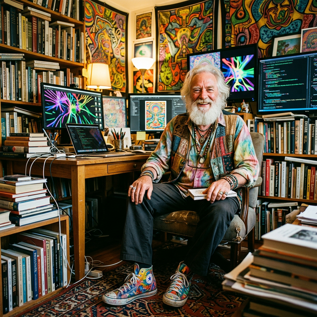
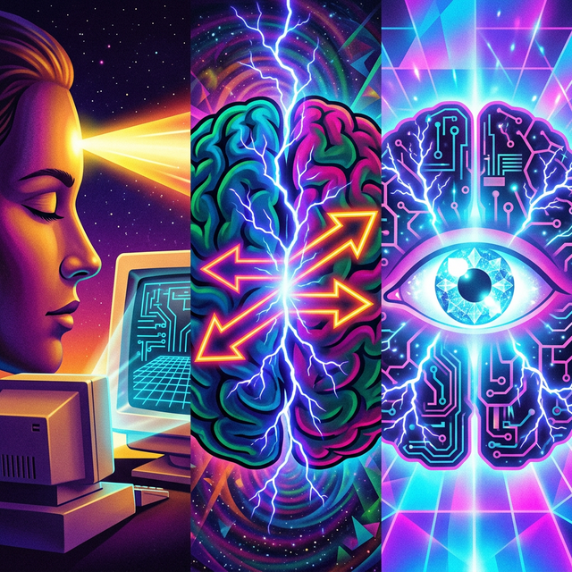
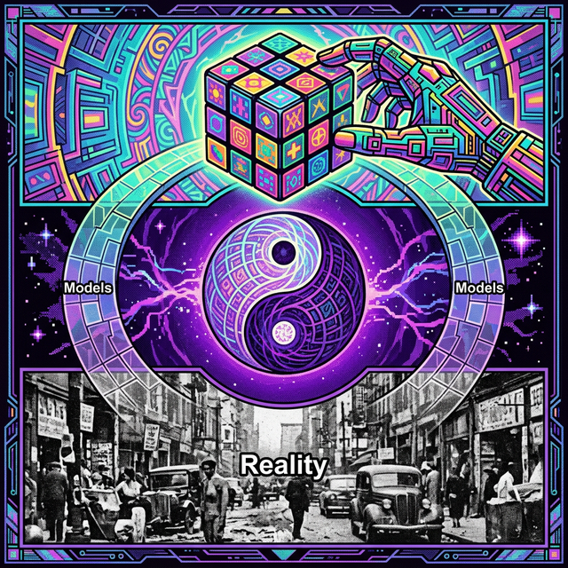

[ PROFILE_007 · MIND AMPLIFIER ]

数字思想家 · 未来学家 · 艺术家
心智扩展技术的布道者
1947 — · Phoenix, Arizona
计算机科学普及者、最早将互联网视为一种社会和文化环境的作者、评论家和教师之一。撰写了多部关于人类思维力量和社交媒体的经典著作。除此之外，他还以那双色彩斑斓的手绘鞋而闻名。
春有百花秋有月，夏有凉风冬有雪。
若无闲事挂心头，便是人间好时节。
——
禅宗无门慧开禅师
论文题目来自禅宗偈语：「这辈子还有什么能比得上这般光景？独自坐在窗前，看花开叶落，四季更迭。」——一位 21 岁的年轻人站在 1968 年反主流文化运动的高潮点上，试图用最硬核的科学理论（控制论、物理学）去解释最玄学的体验（意识、禅定、迷幻）。
研究意识最难的地方在于，它是用意识去研究意识。科学要求观察者独立于被观察物，但研究意识时，你的大脑既是显微镜，又是那个细菌。
他引用维纳的控制论，认为可以通过反馈来解决这个死循环：造一台机器（脑电图机）连接到脑子上，当意识变化时机器发出声音——让意识听见它自己。这就是生物反馈的哲学本质——打破「只缘身在此山中」的困局。
进化并没有结束，只是换了方向：从身体扩张转向神经系统的内爆。深受 McLuhan 和 Teilhard de Chardin 影响：
整篇论文最具人文关怀的部分，也是他后来一生工作的注脚：
人类需要一种「价值的技术」——用来确定什么是人类价值和潜能的工具——并指导技术去实现这些潜能。Alpha波调节器就是这种技术的原型：帮助人通过冥想、自我控制、提升觉知变得更像人。
你不接管技术用来扩展你的心灵，技术就会接管你，把你变成流水线上的齿轮。50 多年后的今天，在 AI 和算法推荐横行的时代，这个警示比 1968 年更加震耳欲聋。
📜 里德大学校刊记载
1968年的春天，就在全世界都觉得末日随时可能降临的当口，里德学院虽然不情不愿，但还是授予了 Howard Rheingold 学士学位。作为交换，学校收到了一篇高年级论文，标题叫《这辈子还有什么能比得上这般光景？独自坐在窗前，看花开叶落，四季更迭》。
修订版包含 1999 年对 Doug Engelbart、Bob Taylor、Alan Kay、Brenda Laurel 和 Avron Barr 的新访谈。

从外部投影（左）到思维碰撞（中）到心智增强（右）：工具内化的三个阶段
旧金山以南、硅谷以北，在松树让位于活橡树和射电望远镜的地方，一个不太靠谱的亚文化一直在创造一种新的人类思维媒介。第一批心智放大机器将是个人电脑的后代，但它们与今天的信息处理技术之间的差距，将不亚于电视与十五世纪印刷机之间的差距。
无论技术本身多么让人目眩，真正的价值来自于它使何种社区成为可能——就像五百年前活字印刷术一样。书籍不过是载体，让思想从精英的私人图书馆逃逸出来，在人群中流通。印刷页面真正的价值来自于它所成就的那个社区——一个至今仍在全世界生生不息的知识共同体。
🔑 核心论点
数字计算机基于一个叫做「通用机器」的理论发现——它不是一台有形的设备，而是一种数学描述，描述了一台能够模拟任何其他机器行为的机器。一旦你创造了一台能模仿任何机器的通用机器，这个工具的未来发展就只取决于你能想到用它来做什么任务。技术的未来极限不在硬件，而在我们的心智。
Rheingold 将心智放大技术的创造者分为三代人：Patriarchs（先祖）——几个世纪前奠定理论基础的逻辑学家和数学家；Pioneers（先驱）——将计算变成个人思维工具的实干家；Infonauts（信息航行者）——用新媒介探索未来认知域的年轻一代。
尽管外表各异，从百年前的先祖到二战时期的控制论学家，再到当代的先驱和信息航行者——他们都有一个共同特征：着迷于自己心智的力量，试图创造一种精神杠杆。
生活在狄更斯和阿尔伯特亲王的伦敦（并且认识他们两个）。在全世界最杰出头脑动用一国之力造出数字计算机的一百年前，这两位古怪的发明家-数学家就梦想着建造他们的「分析引擎」。他造了部分原型，她用它——虽然出了名地不成功——搞了个赌马赢钱的计划。
尽管他们表面上失败了，Babbage 是第一位真正的计算机设计师，Ada 是历史上第一位程序员。
发明了一种给未来计算机建造者使用的数学工具——「逻辑代数」，在将近一百年后被用来将人类推理过程与机器运算联系起来。这个想法在他 17 岁穿越一片草地时灵光一闪而来，但他花了 20 年自学数学才写成《思维的法则》。
他妻子后来把他关于无意识心灵的写作变成了一种人类潜能崇拜——比"自我的十年"早了一百年。
24 岁解决了现代最关键的数学问题之一，在此过程中创造了计算的理论基础。然后成为世界顶级密码破译者——不骑自行车时戴着防毒面具，不跑 20 英里时腰上绑着闹钟。如果不是 Turing 绝密战时任务的成功，盟军可能会输掉二战。
战后他创造了人工智能领域，奠定了编程艺术与科学的基础。他邋遢、离群、有时喧闹刺耳。42 岁时自杀，被他帮助拯救的那个政府残酷地迫害。
会说五种语言，每种语言都知道下流打油诗。他的同事们——本身就是著名思想家——都认为 Johnny 的心智运作太深太快，不完全像人类。他是历史上最杰出的物理学家、逻辑学家和数学家之一，也是发明第一台电子数字计算机的软件天才。
他创造的「存储程序」概念使真正强大的计算机成为可能，他指定的模板——「冯·诺依曼架构」——至今仍用于设计几乎所有计算机。临终时，国防部长、陆海空三军部长和参谋长联席会议全部围在他床边，倾听他最后的技术和政策建议。
被培养成神童：14 岁从 Tufts 毕业，18 岁获哈佛博士，19 岁跟随 Bertrand Russell 学习。他虚荣、有时偏执、不是派对的活跃分子，但在计算机、生物体和物理宇宙基本法则之间建立了重要连接。
控制论部分源于数学、生物学和神经生理学的"纯"科学研究，部分源于设计自动高射炮的残酷应用科学——关于动物、人类和机器中的控制与通信系统的本质。
又一位孤狼天才，至今仍因骑独轮车的技术而为剑桥邻居所知。1937 年，21 岁的研究生 Shannon 证明 Boole 的逻辑代数是分析电话系统复杂开关电路的完美工具——后来也用于计算机。
战争期间和之后，Shannon 建立了信息论的数学基础。连同控制论，这些定理将信息确立为与能量和物质并列的宇宙基本量。
先祖们解决了创造第一台计算机的各种问题；先驱们则与同样棘手的问题搏斗——如何用计算机为人类智力创造杠杆，就像车轮和发电机为人类肌肉创造杠杆一样。
MIT 实验心理学家，后成为美国国防部 ARPA 信息处理技术办公室主任。他是那个唯一的人，其远见使数百名志同道合的计算机设计师能够追求全新的硬件和软件发展方向。
虽然资助方是军方，但 Licklider 雇佣或支持的人正在朝着一种他和他们相信的社会和技术双重变革而努力。他把新一代交互式计算机视为通向一种全新的人类通信能力的第一步。
早在杜鲁门当总统时就开始思考建造思维放大设备，花了 30 年固执地追求「增强人类智力」的系统。60 年代末，向顶尖计算机科学家和工程师演示了那些大多数人用来做数学的设备如何能用来增强最具创造力的人类活动。
他的前学生在今天的个人电脑设计师上层中占了不成比例的大多数。部分因为同代人的近视，部分因为他近乎偏执地坚持保持原始愿景的纯粹性，他的大部分创新至今仍未被正统计算机界采纳。
33 岁接管 Licklider 创建的 ARPA 办公室，开创了一个急需的新领域——大规模、长期人机研究运动的塑造。他成为一个"人才收集者"，寻找那些想法可能被正统派忽视、但其项目有望将计算机系统的水平提升几个数量级的研究者。
电视益智节目原始选手之一。两岁半学会阅读，勉强没被学校和空军开除，最终成为 ARPA 最重要研究中心的研究生。70 年代是 PARC Alto 项目（第一台真正的个人电脑）的灵魂人物和 Smalltalk 语言的首席架构师。
自从第一次因为知道得比老师多而被赶出教室以来，Kay 的目标就是造一台「幻想放大器」——任何有想象力的人都能用它自主探索知识世界的「创造性思维的动态媒介」，对幼儿园的孩子和研究实验室的科学家同样有用。
他们是青少年黑客的哥哥姐姐——大多二三十岁，代表了第一批用冯·诺依曼一代人发明的技术作为想象力延伸工具的麦克卢汉一代。
帮助构建「专家系统」——能从人类专家那里获取知识并传递给其他人的特殊计算机程序。已经用于帮助医生诊断疾病、地质学家定位矿藏、化学家识别新化合物。他梦想创造一个帮助人们达成共识的专家助手。
一位艺术家，她的媒介存在于 Kay、Barr 和 Engelbart 专业领域的交汇处。她想用一个懂得剧作家、作曲家、图书管理员、动画师、艺术家和戏剧评论家所知道的一切的专家系统，创造一个声色世界，让人们可以通过亲身体验模拟微世界来学习——驾驶飞船、在沙漠生存、做一头蓝鲸。
自费出版了 Computer Lib——微电脑革命最畅销的地下宣言。他的一种新型出版媒体和持续更新的世界图书馆的梦想，堪称世界上最长的软件项目。他狂野粗犷、想象力超群、坐不住、和同事处不好关系，却是那些十来岁的孩子们的秘密灵感源泉——那些孩子后来拼凑出自制电脑和程序，如今已是微电脑行业的统治者。
你怎能不喜欢一个说"他们应该管它叫 oogabooga 盒子，而不是计算机"的人？
💡 一条贯穿始终的线索
从先祖到先驱再到信息航行者，每个人都在试图创造一种精神杠杆，每个人都贡献了最终被组装起来的设备中不可或缺的组件，但没有一个人能够涵盖全部。
他们都出于同一种原始冲动——世界上最迷人的东西是自己的心智。他们认为与计算机程序进行长时间深入的互动，是一种与自己思想进行对话的特别令人满意的方式。
尽管外表上的多样性，先祖、先驱和信息航行者们似乎共享着一种对遥远未来的聚焦——他们确信我们其余的人终将像他们一样清楚地看到那个未来——只要他们把心目中看到的东西变成我们可以握在手中的东西。
人的眼睛闭合，但在大脑中开启了心智之眼，通过黄色光束与外部电脑屏幕连接。此时，计算机是心智的投影幕布，通过屏幕（界面）来辅助思考。
人的眼睛睁开了。大脑内部星云分裂成两半，中间出现闪电和反向箭头——工具在改变我们的思维方式，我们也通过工具在重构世界。
人的眼睛不仅完全睁开，且变得晶莹剔透、发光。心智之眼与闪电（工具的能量）完美结合——计算机不再是外部盒子，它成为了人类认知的一部分。这诠释了 Engelbart 的核心理念：电脑应是增强人类智力的「思维工具」。
对应 Artificial Intelligence（人工智能），强调这种体验不是自然发生的，而是通过技术手段被构建出来的。

Mind ↔ Models ↔ Reality — 康德哲学在现代科技语境下的表达
我们的大脑无法直接接触原始现实。我们所知的世界，实际上是大脑构建出来的模型。互联网、文字、VR、语言——全都是给现实建模的工具。「地图不是疆域」的视觉化。
秩序与混乱、数字与肉体、技术与人文——Rheingold 深受反主流文化和东方哲学影响，他一生的追求就是在赛博空间与嬉皮士精神之间寻找平衡。
底部黑白的、噪点严重的、甚至有点狰狞的现实——与上方干净的计算机图形形成鲜明对比。无论我们建立了多么完美的数字模型，底层的现实依然是那个有血有肉的生物体。
站在 Vannevar Bush, J.C.R. Licklider, 和 Douglas Engelbart 等先驱的肩膀上。
🔊 核心论点
技术本身是中性的放大器——如果我们思维混乱且贪婪，技术会放大混乱与贪婪；如果我们追求智慧与协作，技术也能放大智慧。如果我们能带着觉知（Mindfulness）去设计和使用工具，数字媒体完全可以成为人类智力的放大器。
我们并不是在插上芯片后才变成赛博格的。从人类发明语言、拿起石头、刻下符号的那一刻起，我们就是赛博格。我们的生物大脑天生就依赖外部文化和工具来运行。
人类学会阅读并非基因突变，而是回收了识别捕食者所需的视觉神经网络，将其重组用于识别字母。工具的使用改变了大脑的物理结构。
Engelbart 的核心思想：用第一代工具（语言）创造第二代工具（文字），再创造印刷术，再创造计算机——利用现有能力提升自身能力的无限阶梯。
来自神经科学家 William Calvin 的迷人观点：人类复杂的语言能力最初并不是为了聊天，而是为了扔石头打猎。
要用石头击中移动的兔子，大脑需要极快地进行复杂的弹道计算和肌肉动作序列规划。这种神经机制后来被大脑挪用来处理另一种序列——将单词排列成有意义的句子。
我们今天的诗歌、代码和哲学，其神经基础可能源于祖先为了生存而投出的那一块石头。
用 Stigmergy（共识主动性）来解释互联网协作——对去中心化最优雅的描述：
最伟大的集体智慧并不需要一个中央大脑，只需要设计好在环境中留痕的机制。
在印刷时代出版是一层过滤器，而在网络时代这层过滤器消失了。海明威曾说"作家需要精密的废话检测器"。Rheingold 将其升级为数字时代的生存必需品：
要在网络生存，必须通过元认知（思考自己的思考过程）来实时过滤信息。这不仅仅是怀疑精神，而是一种需要刻意练习的认知技术。
来自 Notion 和 Kevin Kelly 等采访中的核心观点：
ARPANET 的初衷并非仅为核打击下保持通讯（那是兰德公司的想法），实际上是让不同大学的研究人员共享计算资源。Licklider 和 Bob Taylor 敏锐发现程序员们不仅在跑程序还在用它聊天——计算机不仅是数据机器，更是通讯设备，这是虚拟社区诞生的基石。
致敬精神导师 Engelbart：计算机不应只是更高级的打字机，而应是增强人类智力的工具。虽然硬件快了亿万倍，但在如何使用工具来思考的方法论上，我们进步甚微。
他反对"数字原住民"这个概念——年轻人有直觉和时间，但老年人有经验和反思能力。最好的学习是跨代互补的。他在 49 岁时把电脑交给 19 岁实习生配置，并不以此为耻。
👟 给普通人的建议
玩起来 (Fooling around)。不要害怕弄坏电脑或显得笨拙，像孩子一样去修补和探索工具，是适应这个数字世界的最佳方式。他推崇一种像玩泥巴一样的学习——把代码拿来改一改，看看会发生什么。早期的查看源代码功能是互联网创新的源泉。
大一刚入学他吞下大量的牵牛花种子（致幻剂），发现自己嗨得太厉害去不了迎新会，在宿舍里花了 24 小时画——这次误服开启了他终身的绘画之旅。
来自 Kevin Kelly 的访谈——Rheingold 展示了一系列让他事半功倍的数字工具和手工工具：